Build pacemaker-1.0 from source using maven. Reverse engineer to UML and Structure 101. Uses these modeling tools on your own assignment
The solution will require maven to be installed on your computer.
Download and install the latest version if you havent done so already. Make sure it on your command line path, such that when you type:
mvn -vyou might get something like this:
Apache Maven 3.3.9 (bb52d8502b132ec0a5a3f4c09453c07478323dc5; 2015-11-10T16:41:47+00:00)
Maven home: C:\dev\apache-maven-3.3.9\bin\..
Java version: 1.8.0_73, vendor: Oracle Corporation
Java home: C:\Program Files\Java\jdk1.8.0_73\jre
Default locale: en_IE, platform encoding: Cp1252
OS name: "windows 10", version: "10.0", arch: "amd64", family: "dos"The sample solution below is a skeleton solution designed for the purpose of demonstrating Visual Paradigm and Structure101; for this reason, it should not be considered as the complete, difinitive solution:
Download and unarchive.
It is a maven project, which includes these dependencies:
<dependencies>
<dependency>
<groupId>org.eclipse.xtend</groupId>
<artifactId>org.eclipse.xtend.lib</artifactId>
<version>${xtend.version}</version>
</dependency>
<dependency>
<groupId>junit</groupId>
<artifactId>junit</artifactId>
<version>4.11</version>
<scope>test</scope>
</dependency>
<dependency>
<groupId>com.google.guava</groupId>
<artifactId>guava</artifactId>
<version>18.0</version>
</dependency>
<dependency>
<groupId>com.thoughtworks.xstream</groupId>
<artifactId>xstream</artifactId>
<version>1.4.8</version>
</dependency>
<dependency>
<groupId>org.codehaus.jettison</groupId>
<artifactId>jettison</artifactId>
<version>1.3.4</version>
</dependency>
<dependency>
<groupId>com.googlecode.clichemaven</groupId>
<artifactId>cliche</artifactId>
<version>110413</version>
</dependency>
<dependency>
<groupId>btc-ascii-table</groupId>
<artifactId>btc-ascii-table</artifactId>
<version>1.0</version>
</dependency>
<dependency>
<groupId>org.codehaus.jackson</groupId>
<artifactId>jackson-core-asl</artifactId>
<version>1.9.13</version>
</dependency>
<dependency>
<groupId>com.fasterxml.jackson.core</groupId>
<artifactId>jackson-databind</artifactId>
<version>2.2.3</version>
</dependency>
<dependency>
<groupId>joda-time</groupId>
<artifactId>joda-time</artifactId>
<version>2.3</version>
</dependency>
</dependencies>One of these dependencies does not install correctly from the Maven repo:
Download this jar, navigate to the folder containing the jar and install it using the following maven command:
mvn install:install-file -Dfile=btc-ascii-table-1.0.jar -DgroupId=btc-ascii-table -DartifactId=btc-ascii-table -Dversion=1.0 -Dpackaging=jarThe project should build now and the above component should be installed in your .m2 repo.
Try the following commands:
mvn compile
mvn test
mvn package
mvn eclipse:eclipseAfter the latter, the project can be imported into eclipse:
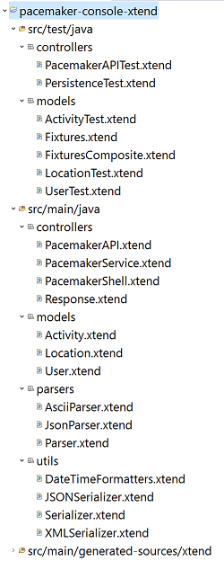
From there you should be able to execute it, and also run all tests.
Navigate to your \target\surefire-reports directory and check out the surefire reports that were generated by the maven-surefire-plugin.
To reverse engineer your code to UML, you will need Visual Paradigm.
Download and install the latest evaluation version from here:
In order to avoid excessive information in the UML diagrams, customise the defaults as follows:
Select Windows->Project Options->Diagramming->Shape to look like this:
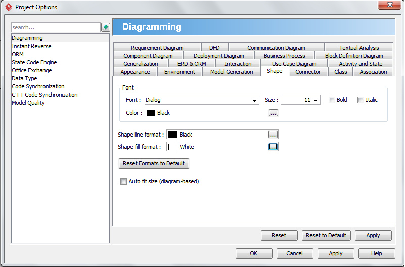
Select Tools->Project Options->Diagramming->Class->Presentation to look like this:
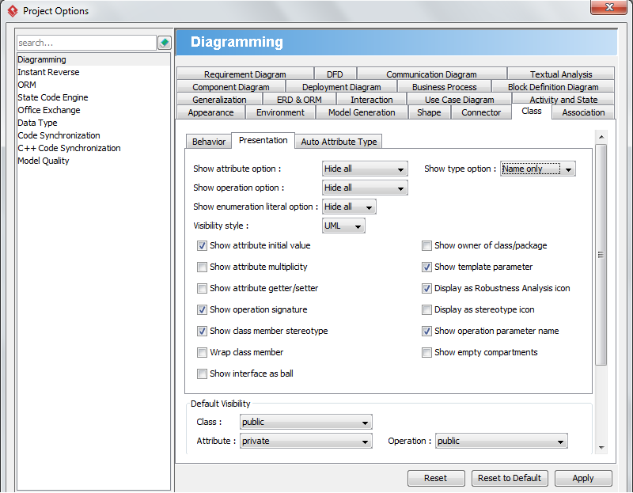
Select Tools->Code->Instant Reverse->Java
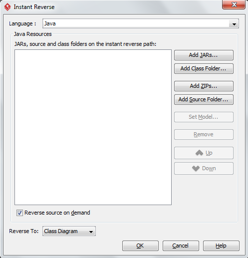
Press Add Source Folder and select the xtend from src/main/generated-sources in the maven project as shown here:
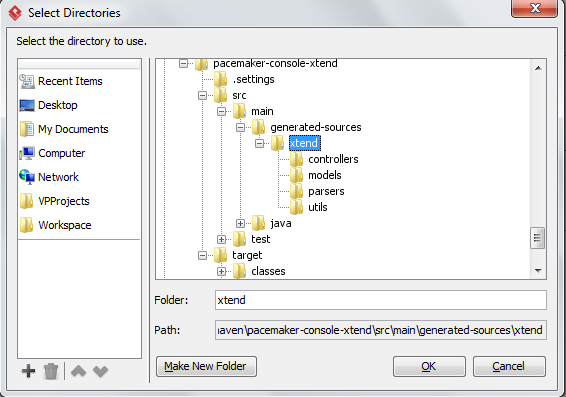
Press the ok buttons - and Visual Paradigm should ingest the sources presenting you with a model view:
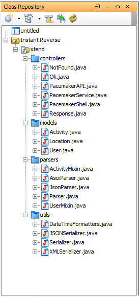
Right click on a package - say models - and select Reverse To->New Class Diagram
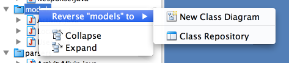
Which should produce something like this:
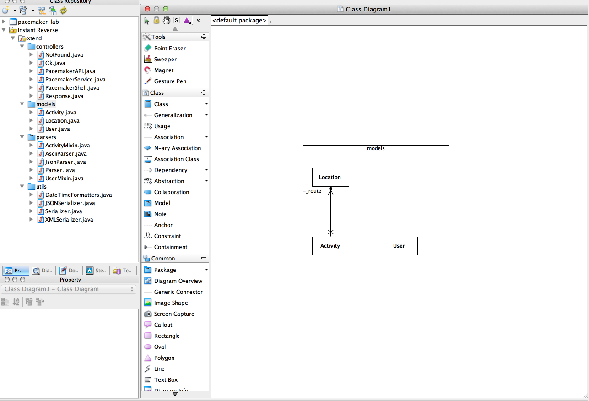
Name the package models by directly typing in the top left of the canvas:
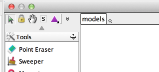
Reverse each of the other packages, and we should see something like this for each one (rename the packages as you go along)
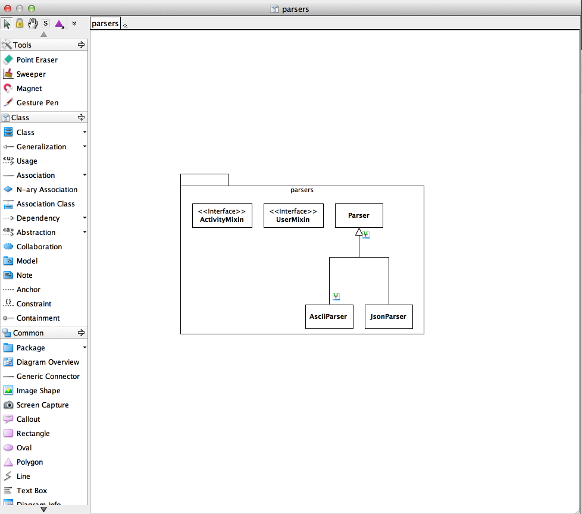
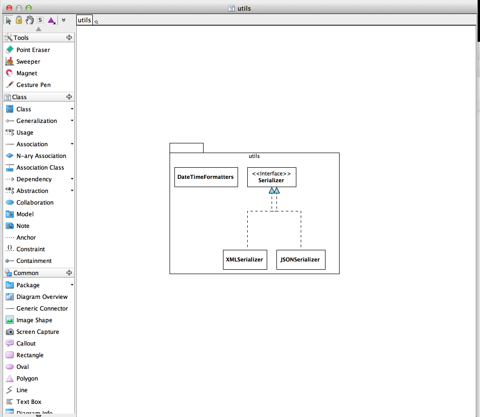
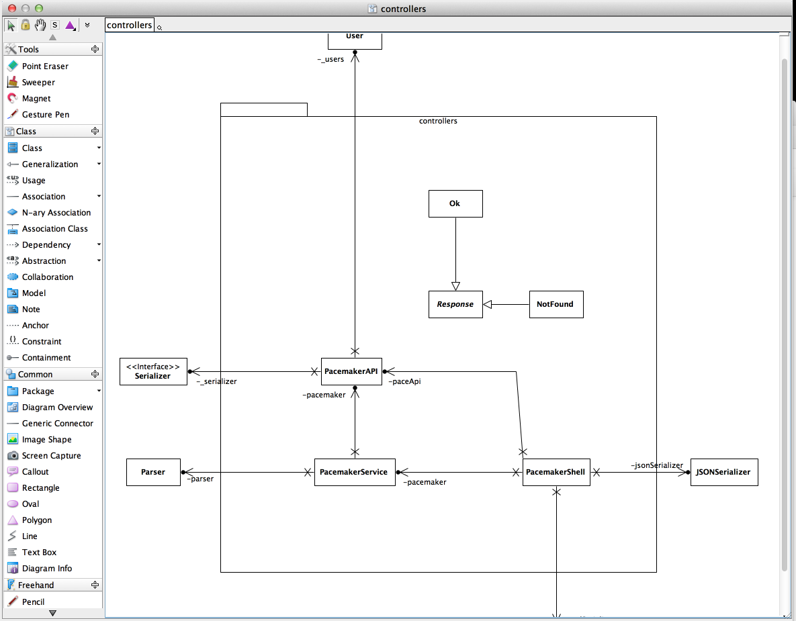
Become familiar with the Diagram view as well as the Model view you have been using so far:
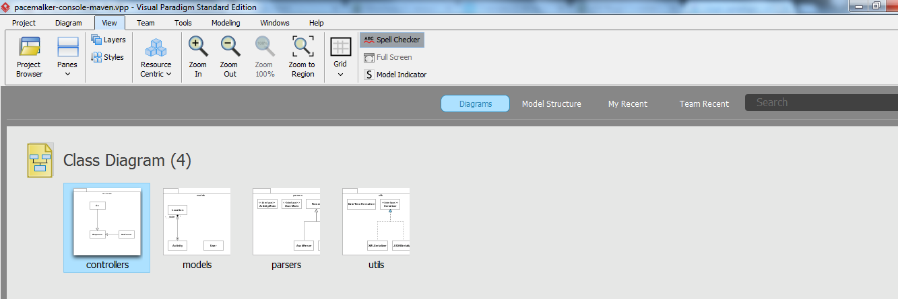
Most of the reverse engineering went as expected - representing key aspects of the model reasonable accurately. However, there are some deficiencies in the 'model' package - see if you can fix these now such that the model looks like this:
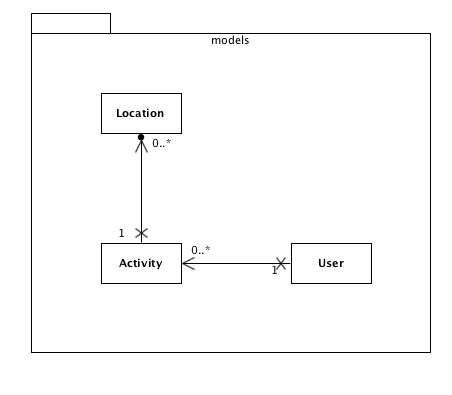
This is a good resource if you need to refresh your memory on UML associations.
We can also reverse Sequence Diagrams from the source, which yield a more dynamic view of the application.
In the Model view, select PacemakerService->createActivity and select Reverse To->Sequence Diagram:
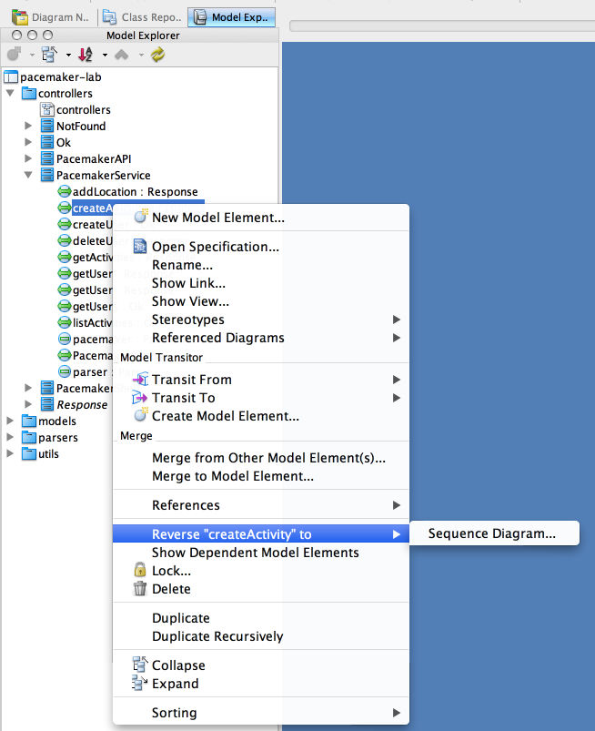
This should yield a sequence diagram similar to this one (note: you will probably have parameters and return types on your diagram):
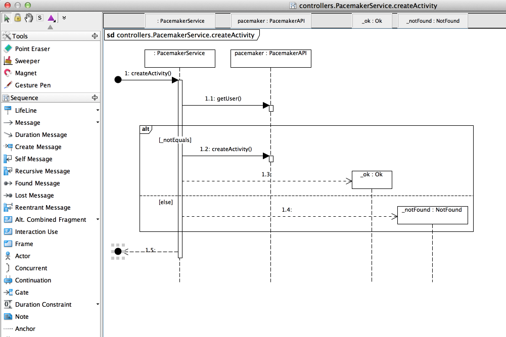
Here is a reverse of the createUser method in the same class:
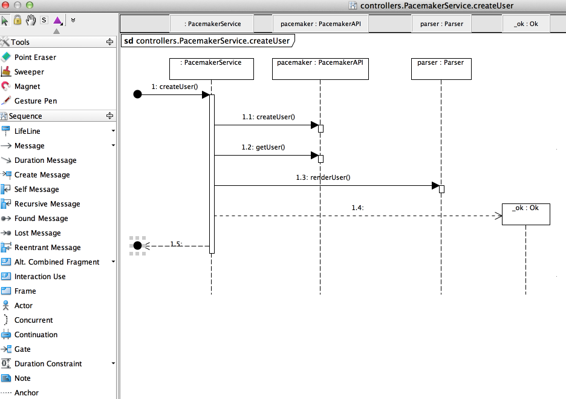
Experiment with a few of the other methods.
Visit the products page for HeadWay Software and review the strengths / benefits of Structure101:
Download the Structure 101 Studio product (java):
- <http://structure101.com/downloads/>
- You will need to register for a free 30 day trial (receive an activation key by email).Reverse engineer the sample solution using the 101 tool. You will have seen the screen shots in the lecture of a 101 reverse of the project.
User guides here:
These should enable you to reproduce the diagrams reviewed in the lecture.
Note: if your JUnit test classes are appearing in your diagrams you may need to exclude them from your Structure101 project.
You can install the Eclipse Structure-101 plugin if you wish. The link to the software is:
- <http://www.structure101.com/downloads/structure101/ideplugin/eclipse>NOTE: The eclipse plugin diagrams are read-only; you associate a project you previously built in Structure-101 with your open eclipse project. Once the association is in place, the plugin retrieves the architecture diagrams from the repository and displays them in the Diagrams viewer. It then plugs itself into the IDE build system, ready to check for violations whenever a project source file is (re-)compiled. Any violations it finds are shown as overlays on the architecture diagrams in the Diagrams Viewer.
For more information, see here.
If you used java or a java derived language, you should be in a position to reverse engineer your solution using:
as reviewed in this lab. Do this now.
This is a Visual Paradigm reverse of the solution we provided earlier in the lab: